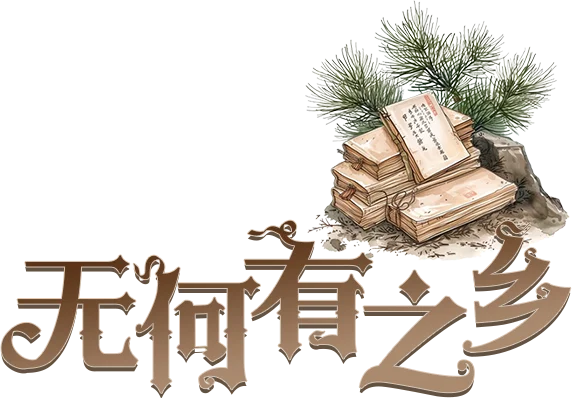

册
钟楼资料库
个人离线整理
全部
角色
剧本
规则
其他
游戏信息
首页
规则概要
重要细节
术语汇总
给说书人的建议
相克规则
认证说书人
角色
暗流涌动
黯月初升
梦殒春宵
旅行者
传奇角色
实验性角色
奇遇角色
华灯初上
角色能力类别总览
奥德赛 Odyssey
总览
镇民
外来者
爪牙
恶魔
传奇与奇遇角色
术语与概念
全部角色
海外自制角色
总览
镇民
外来者
爪牙
恶魔
传奇角色
全部角色
剧本
剧本库
剧本工具
工具
全角色索引（技能筛选）
全部页面
最近更改
图片列表
统计
随机页面
无何有之乡
来自钟楼百科
目录
镇民
外来者
爪牙
恶魔
无何有之乡是“快速上手剧本”系列剧本之一，目的是为了让玩家可以快速体验包含
村夫
、
卡扎力
、
帽匠
、
奥赫
、
修行者
、
瘟疫医生
的游戏。

镇民
小精灵
修行者
村夫
女祭司
神谕者
僧侣
博学者
女裁缝
哲学家
杂耍艺人
农夫
罂粟种植者
食人族
外来者
酒鬼
帽匠
政客
瘟疫医生
爪牙
灵言师
投毒者
红唇女郎
鹰身女妖
间谍
恶魔
奥赫
卡扎力
军团
最后修改于 2024-01-26T15:32:55Z，编辑者
Little Black
｜ 页面 1,748 字节 ｜
查看原页面
链入此页的页面（8）
瘟疫医生
新角色公布计划
修行者
奥赫
帽匠
卡扎力
村夫
无何有之乡